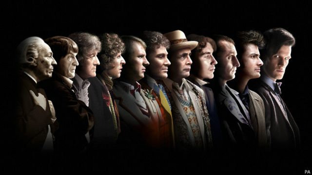
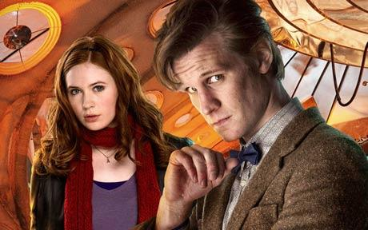
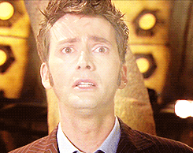

|  |
Doctor whoA serie iniciou sua transmissão oficial no dia 23 de novembro
de 1963 no reino unido e em 1964 internacionalmente, e está sendo produzida
até os dias atuais! O programa está listado
no Guinness World Records como a série de ficção científica televisiva de mais longa
duração no mundo como a "mais bem sucedida" série de ficção científica de todos os tempos
tendo ao todo 27 temporadas atualmente! |
|---|---|
|
 |
O doutor"O Doutor" é assim que ele é chamado embora esse não seja seu nome! O doutor é um alienigena, da espécie dos senhores do tempo, ele é capaz de viajar no tempo e no espaço, podendo ir para Londres em 1950 ou 3051, ou ir para algum planeta que ele ou sua companheira desejar. Por falar em companheira, o doutor em todas as temporadas tem alguém ao seu lado. Todos recomendam que ele não viaje sozinho pois, ele precisa de alguém para faze-lo manter a cabeça no lugar. Matt Smith (ator da foto ao lado) é considerado pela comunidade o melhor doutor e junto a ele está a Amelia Pound, a pessoa que o acompanhou durante 2 temporadas e meia. A comunidade gostou tanto deste doutor que ele foi o doutor que ficou mais tempo na série. Mas ai pode surgir uma dúvida, a série possui 27 temporadas mas o doutor mais amado ficou apenas 2 temporadas e meia então, como é feita essa troca de atores e como a comunidade aceita tão bem? |
|
 |
RegeneraçõesÉ aqui que acontece a troca de atores, os senhores do tempo tem um mecanismo para enganar a morte. Quando eles sofrem um ferimento que seria fatal para a maioria das espécies eles utilizam a energia do vortex para se regenerar. O problema é que isso muda quem eles são, personalidade, jeito de agir, forma de falar, ROSTO, então dessa forma a série colocou de forma aceitável e explicavél a mudança entre doutores, afinal estamos cansados de ver um ator simplesmente mudar ou um dublador também. |